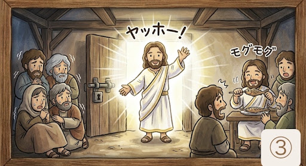
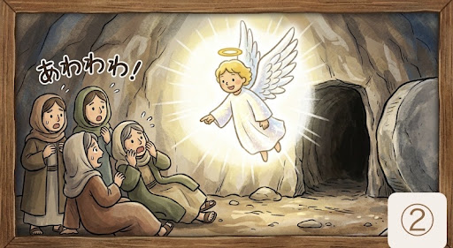
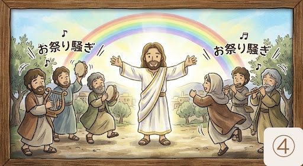

聖書から読み解く、世界と私たちの「はじまり」
1. なぜ日曜日はお休み（休日）なの？
皆さんは、どうして1週間が7日で、そのうち1日が「休日」なのか不思議に思ったことはありませんか？
実はこれ、聖書のいちばん最初にある「天地創造（てんちそうぞう）」という物語がルーツなんです。
神様は6日間かけて、光や空、海、生き物など、この世界のすべてをつくり上げました。聖書にはこう記されています。
「一生懸命働いたら、心と体を休ませよう」という今の私たちのリズムは、実はこの聖書の優しいルールから始まっているんですよ。
2. 世界の基準は「光」から始まった
神様が最初につくったのは「光」でした。
面白いことに、現代の物理学でもエネルギーや時間の基準は「光」だとされています。
大昔に書かれた聖書が「まず光をつくった」としているのは、この世界の「秩序（きまり）」を最初につくったということ。バラバラだった場所に、光という確かな「ものさし」を置くことで、命が育つ準備を整えてくださったんですね。
3. アダムとエバ：人は「助け合う」ようにつくられた
神様が最後に心を込めてつくったのが、私たち人間の先祖、アダムとエバです。
聖書の中で、神様はこんな風に言っています。
アダム一人では寂しいだろうと、神様は彼のそばに寄り添うパートナーとしてエバをつくりました。
「寂しいときに誰かを求めること」や「困ったときに助けを呼ぶこと」は、決して恥ずかしいことではありません。人間はもともと、「誰かと支え合って生きていく」ようにデザインされているからです。
4. 「ごめんなさい」が言えなかった物語
アダムとエバは、美しい「エデンの園」で幸せに暮らしていました。ルールはたった一つでした。
けれど二人は、蛇の誘惑に負けてその実を食べてしまいます。
すると急に「裸でいるのが恥ずかしい」と感じて隠れるようになり、神様に見つかると「エバが勧めたから」「蛇がだましたから」と、お互いに責任を押し付け合ってしまいました。
これは、今の私たちの社会にも通じる姿かもしれません。自分の非を認められず、誰かのせいにしてしまう……。聖書ではこれを「罪」と呼びますが、それは「神様という大きな安心から離れて、人の目を気にするようになってしまった状態」を指しているんです。
5. それでも, 神様は愛を捨てなかった
約束を破った二人は、楽園を出て、苦労して働き、いつかは死んでしまうという厳しい現実を背負うことになりました。
けれど、物語の最後には、神様の深い優しさが描かれています。
恥ずかしがって震える二人のために、神様はわざわざ「皮の服」をつくって着せてあげたのです。
「ダメなことは叱るけれど、それでもあなたたちを愛しているし、守ってあげたい」。
聖書が伝えているのは、そんな温かい親心のようなメッセージ。私たちがどんなに失敗しても、神様の愛は変わらずそこにあることを教えてくれています。
ハッピーイースター！！
イエスさまのふっかつのおはなし♪ はじまりはじまり〜⭐︎
① お墓の石が……ゴロゴロ〜ッ！

大好きだったイエスさまがいなくなって、弟子たちは「もう二度と会えないんだ……」と、お顔を真っ赤にしてシクシク泣いていました。お墓の入り口には、大人が100人集まっても動かせないような、「すごく大きな岩」でフタをされてしまったんです。
ところが3日目の朝、地面が ドカドカドカッ！ とゆれて、天使が岩を 「ひょいっ」 と転がしてしまいました！
② 犯人さがし？ いいえ、生き返ったんです！

朝はやくにお墓に来た女の人たちは、腰を抜かしてびっくり！「ええっ！？ 岩が開いてる！ 中が…… からっぽだわ！ 誰かがイエスさまを連れて行っちゃったの？」
するとそこへ、キラキラ光る天使がニコニコ笑いながら言いました。
「ちがうよ！ さがさなくていいよ。イエスさまは、約束どおり……生き返ったんだよ！」
③ 扉をすり抜けて「ヤッホー！」

その日の夜、弟子たちは怖くて部屋のドアにカギをかけて震えていました。すると突然…… パッ！！ なんと、イエスさまが部屋のど真ん中に立っていたのです！
みんなは「おばけだー！」と大騒ぎしましたが、イエスさまはニコニコ笑って言いました。
「おばけじゃないよ。ほら、触ってみて。お腹も空いたから、お魚でも食べようかな！」
みんなの前で モグモグ お魚を食べるイエスさまを見て、みんなはやっと「本物のイエスさまだ！」と大喜びしました。
④ ずっと一緒のヒーロー！

「わあ、本物のイエスさまだ！ おかえりなさい！」みんなは飛び上がって喜び、ダンスをしてお祝いしました。
イエスさまは「死んじゃっても、また会えるんだよ。ずっとみんなのそばにいるからね！」という、世界で一番強いパワーを見せてくれたヒーローなんです。
不安なときは「イエスさまがいるから大丈夫！」と思ってね。いつでもイエスさまをよぼう！ ハレルヤ！！
✨ お祈りしよう
天のお父様、
イエスさまが死に勝って、最高のハッピーエンドを見せてくださったことを感謝します。
悲しいときや、怖くてブルブル震えてしまうときも、
イエスさまが、いつも隣にいてくれることを思い出して安心させてください。
大好きです。
イエスさまのお名前によってお祈りします。
アーメン！